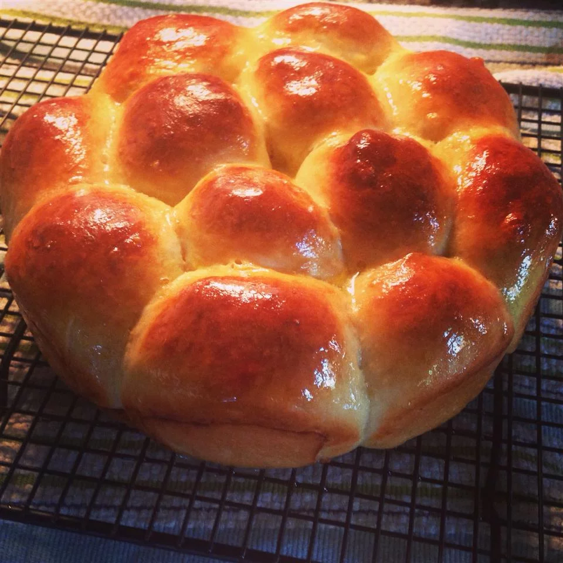

Classic Dinner Rolls

Description
Who can resist warm yeast rolls, fresh from the oven?
Ingredients
- 2 cups all-purpose flour, or more if needed
- 1 envelope Flieschmann's RaidRise Yeast
- 2 tablespoons sugar
- 1/2 teaspoon salt
- 1/2 cup milk
- 1/4 cup water
- 2 tablespoons butter OR margarine
Steps
- Combine 3/4 cup flour, undissolved yeast, sugar and salt in a large bowl. Heat milk, water and butter until very warm
(120 degrees to 130 degrees F). Add to flour mixture. Beat 2 minutes at medium speed of electric mixer, scraping bowl
occasionally. Add 1/4 cup flour; beat 2 minutes at high speed. Stir in enough remaining flour to make soft dough. Knead
on lightly floured surface until smooth and elastic, about 8 to 10 minutes. Cover; let rest 10 minutes.
- Divide dough into 12 equal pieces; shape into balls. Place in greased 8-inch round pan. Cover; let rise in warm,
draft-free place until doubled in size, about 30 minutes.
- Bake in preheated 375 degrees F oven for 20 minutes or until done. Remove from pan; brush with additional melted butter,
if desired. Serve warm.